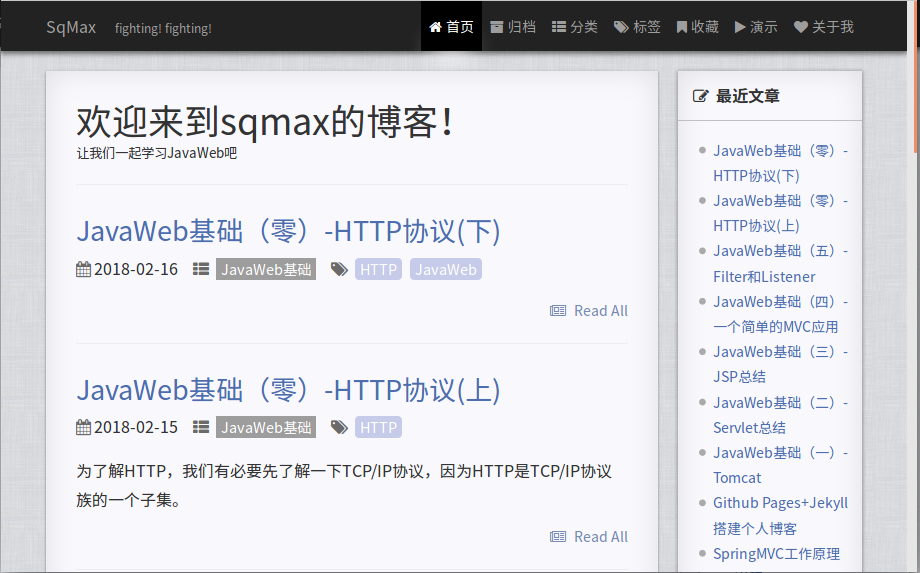

孙强
关注前端，专注于后端
一只正在努力奋斗的程序猿
专业技能
Java
C
MySQL
HTTP
Servlet&JSP
Tomcat
Spring
Mybatis
SpringMVC
Redis
Git&Github
Linux
Markdown
Maven
个人博客
2018/01
使用 Jekyll 在 GitHub Pages 上搭建个人博客。

- 熟悉 Github、 Git 的使用方法
- 使用 Jekyll 模板，修改 CSS 样式
- 掌握 Markdown 语法
博客地址:http://sqmax.top/blog
教育背景
河南理工大学 测绘学院 本科
2013.9-2017.6
我的证书
- CET-6
-
浙江大学2017年12月PAT甲级64(118/464)
证书地址
- 浙江大学2017年9月PAT乙级68(34/586)
证书地址
- 河南省第六届翻译竞赛二等奖
More
喜欢英语，读书，跑步健身
曾参与校园运动会长跑，冬季长跑比赛，希望跑一场马拉松
喜欢钻研技术，希望开发出漂亮的网站
个人主页 | 博客 | GitHub| 邮箱|关于